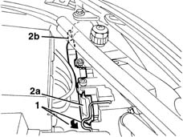
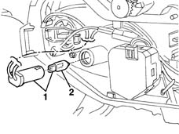

5540B26 bulb (one) for side lights of one headlamp/light cluster, l/h or r/h - r+r
- Path
- Procedures > 55 ELECTRICAL EQUIPMENT > 5540 EXTERIOR LIGHTING > 5540B headlamps > 5540B26 bulb (one) for side lights of one headlamp/light cluster, l/h or r/h - r+r
- Kind
- repair procedure (removal / refitting; the operation number is the code)
- Applies to
- all engines; all production periods
- Interactive page
- https://sloeber94.github.io/elrnDB-lYpsln/en/#/2429410
Applies to: all engines; all production periods
 Removing
Removing
 Refitting
RefittingOpen the bonnet lid.
1. Turn the cover retainer.
2. Remove cover (2a), releasing the retainers (2b).

Applies to: all engines; all production periods
1. Extract the bulb holder with the bulb.
2. Extract the bulb from the bulb holder (press fit).

Applies to: all engines; all production periods
Refitting
RemovingCheck the condition and the cleanliness of the lamp.
Fit the bulb in the bulb holder.
Fit the bulb holder with bulb in its seat.
Refit the cover correctly, exerting pressure to the centre of it, until a click is heard. Check that it is secure.
Reposition the cover retainer.
Check the operation of the bulb.